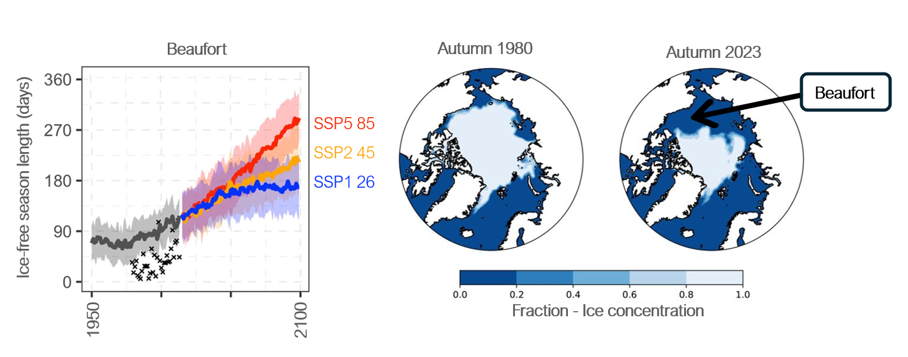
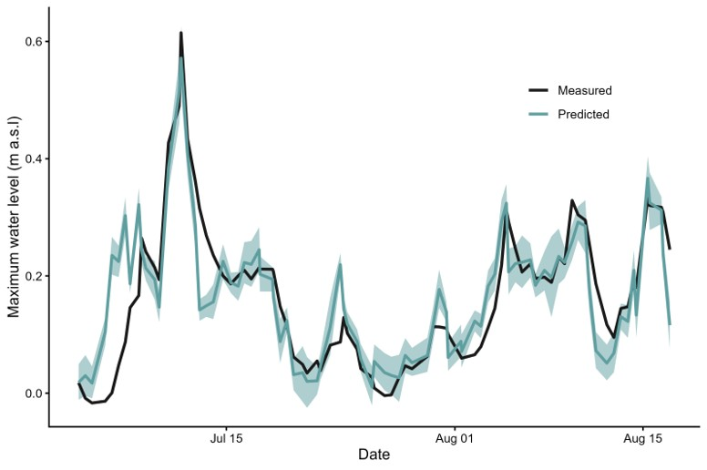

The Problem
A rapidly changing Arctic coastline
The Western Arctic is experiencing a dangerous convergence of climate-driven changes. The Beaufort Sea's ice-free season is extending rapidly — expanding at up to 5 days per year in the 2000s — and autumn sea ice extent has declined dramatically since 1980. This matters because autumn is when storms are most active. As re-freeze arrives later, storms now strike an open, unprotected ocean rather than ice-covered water, generating larger waves and stronger surges along vulnerable permafrost coastlines.

// Ice-free season length in the Beaufort Sea (left) and autumn sea ice concentration 1980 vs. 2023 (right). The Beaufort has lost the majority of its fall sea ice cover — the season when storms are most intense. Source: NSIDC Climate Data Record; Barnhart et al. (2021) Communications Earth & Environment, 2, 109. doi:10.1038/s43247-021-00183-x
Rate of ice-free season expansion in the Beaufort Sea, 2000–2007 — five times faster than the 1979–2007 average.
Of Arctic coastal communities projected to be inundated by sea level rise by 2100 (Tanguy et al. 2024).
Canadian sites currently at risk of severe coastal flooding, with late re-freeze now coinciding with peak autumn storm season.
Study Site
Qikiqtaruk — Herschel Island

Qikiqtaruk (Herschel Island), located off the Yukon coast in the Beaufort Sea, is one of the most culturally and ecologically significant sites in the Canadian Arctic. It holds Inuvialuit heritage spanning millennia, alongside rare archaeological remains from early 20th-century whaling.
Simpson Point — a low-lying gravel spit at the island's southern tip — is the focus of this study. It is the site of historic structures, active Yukon Parks infrastructure, and the primary monitoring location for the WELL project. The point faces increasing flood frequency as storm surges overtop its low coastal berm.
The gravel and permafrost coastline is highly sensitive to flooding, erosion, and thaw — processes that are accelerating as sea ice retreat extends the storm season deeper into autumn.
Historical Context
Flooding is increasing rapidly
Historical records and oral knowledge from Qikiqtaruk reveal a dramatic increase in flood frequency and severity over the past century.
Rare, isolated events. Single flood occurrences documented across decades — flooding was an exceptional event at Simpson Point.
Flooding every 2–3 years. A shift to regular flooding as sea ice conditions begin to change and storm frequency increases.
19 flood days recorded across the ice-free season — the first full year of the WELL monitoring network. Flooding had transitioned from a periodic hazard to a near-seasonal occurrence.
23 flood days recorded, including the historically highest water level ever measured at Qikiqtaruk on 11 July 2025. A landmark year confirming the accelerating trend.
Watch flood timelapseMethods
In situ monitoring network
The WELL project deploys a multi-sensor monitoring network at Simpson Point, capturing water level dynamics alongside the meteorological and oceanographic forces that drive flooding.
6-Well Water Level Network
Pressure sensors in six coastal wells record continuous water level and salinity data across the full ice-free season (2024–2025).
Wind & Weather Station
In situ weather station captures wind speed, direction, and atmospheric pressure to characterize storm events.
Waves & Tidal Signal
Sensors resolve tidal and storm surge components of water level, alongside wave height and period from the Beaufort Sea.
Bayesian Multivariate Models
Bayesian models are used to determine which hydrological and climatic events are causing flooding events locally.
Key Findings
What drives flooding at Qikiqtaruk?
Storm surges are the primary driver of flood level. Surge magnitude explains the largest share of variance in water level — when surge is elevated, flooding occurs regardless of other conditions.
Wind and waves amplify flooding under surge conditions. Easterly winds and wave action strongly predict flood severity, but their impact is greatest during already-elevated storm surges. Local wind and wave data substantially improves flood prediction beyond surge alone.
Flooding risk is highest during surges with sustained easterly winds. This directional finding has direct implications for Yukon Parks' operational monitoring and ECCC's coastal flood alert thresholds.
Bayesian models successfully predict flood maxima. The model performs well at predicting peak water levels, with current limitations around drainage lags and freshwater–marine lens interactions at lower water levels — targets for future refinement.

// Figure — Eckert et al. (in prep.) — Flood drivers and water level model output, Simpson Point, Qikiqtaruk 2024–2025.
Impact
Informing monitoring and forecasting
The WELL project is designed from the ground up to produce results that are directly actionable for the partners managing Qikiqtaruk and the broader Arctic coast.
ECCC — Coastal Flood Alerting and Prediction
Results directly inform Environment and Climate Change Canada's Coastal Flooding Prediction and Alerting Program, improving the regional models used to issue flood alerts across the Canadian Arctic.
Yukon Parks Ecological Monitoring
The WELL monitoring framework is integrated into Yukon Parks' Ecological Monitoring Program, providing long-term flood data for management of Qikiqtaruk's cultural and natural heritage.
Inuvialuit Community Partners
In collaboration with Qikiqtaruk Park Rangers and the Aullaviat / Anguniarvik Guardians, findings support local stewardship of the island's irreplaceable archaeological and ecological resources.
Scalable Arctic Monitoring
The in situ monitoring approach is designed to be replicable across remote Arctic coastlines where continuous satellite observation is limited — supporting conservation efforts from Shingle Point to the broader Canadian Beaufort.
Collaborators